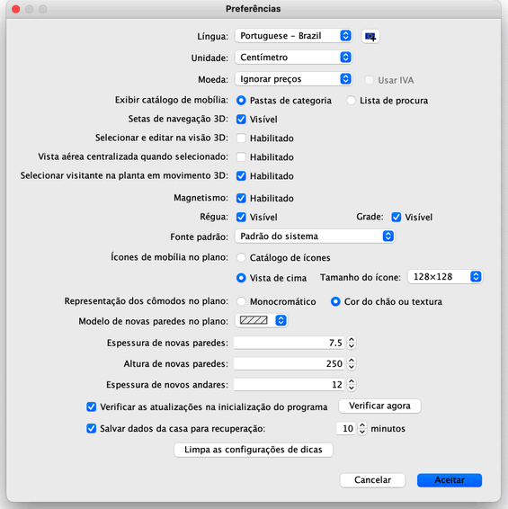

|
Para editar as prefer�ncias, escolha Sweet Home 3D > Prefer�ncias... no Mac
OS X ou Arquivo > Prefer�ncia... em outros sistemas.

Na janela de prefer�ncias, voc� pode escolher a Língua do Sweet Home 3D
e a Unidade a ser usada para mostrar a r�gua e a grade no plano da casa, e
mostrar os tamanhos.
A op��o de Magnetismo habilita ou desabilita o magnetismo usado no plano da
casa durante o desenho das paredes e no
posicionamento das mob�lias.
A op��o de R�gua permite mostrar ou n�o a r�gua no plano.
A op��o de Grade permite mostrar ou n�o a grade no plano.
O menu drop down Fonte padr�o permite selecionar a fonte usada para textos
mostrados no plano (i.e. nome da mob�lia, nome e
�rea dos c�modos, comprimento das
linhas de dimens�o e fonte padr�o dos
textos) livres.
O valor de Espessura de novas paredes configura a espessura que ser�o
desenhadas todas as novas paredes, a partir do momento em que essa configura��o for
aplicada.
O valor de Altura de novas paredes configura a altura que ser�o desenhadas
todas as novas paredes, a partir do momento em que essa configura��o for aplicada.
|